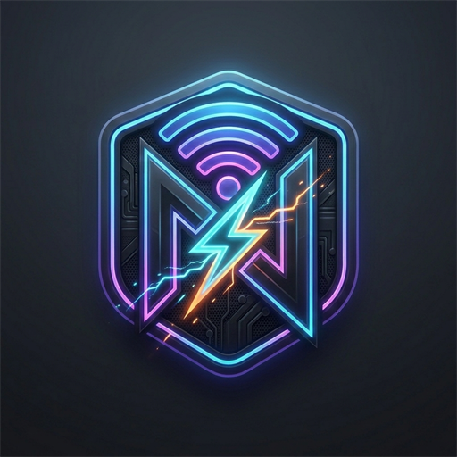
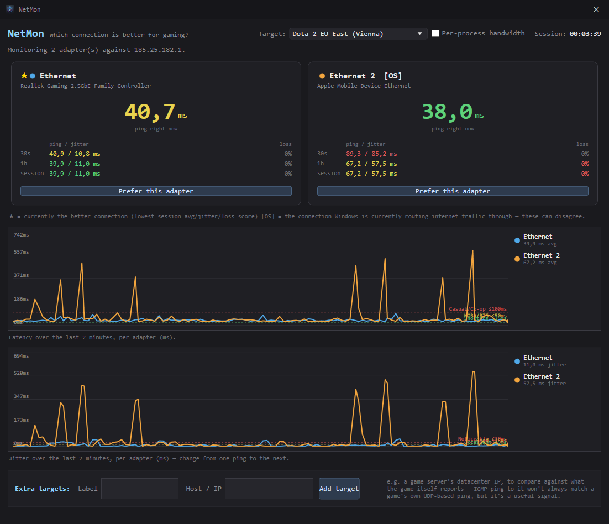
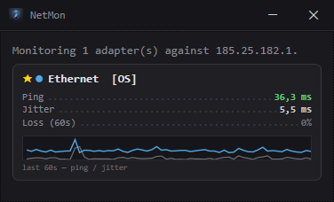
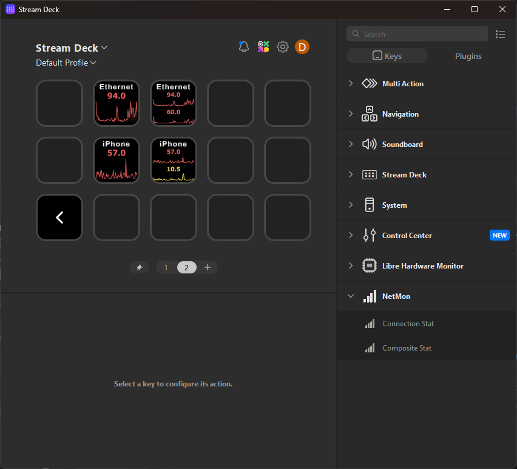

Pings every active connection on your PC at once — Ethernet, Wi-Fi, USB tether — and shows you, live, which one Windows should be using for gaming.
Free · No account · Windows 10/11 · portable .exe and other downloads
One second-by-second table stops being useful once you have two connections. NetMon graphs latency and jitter side by side so a bad hop is obvious at a glance.
One line per adapter, last 2 minutes, with reference bands for shooter/MOBA/casual latency tiers.
Ping your default target and a specific game server's datacenter at the same time, on the same adapters.
One click lowers an adapter's Windows metric so your OS actually routes traffic over your best connection.
See exactly which app is eating your connection when things get laggy — opt-in, since it needs admin rights.
Shrink it down to a small always-on-top strip with just ping, jitter, loss and a mini trend graph.
Put live ping or jitter — as text, a graph, or both — right on a key, color-coded by the same tiers.
Windows picks a connection to route your traffic through based on interface metric, not on which one is actually fastest right now. It might default to Ethernet even while your phone's hotspot is measurably better — and neither Task Manager nor your router will tell you.
NetMon marks the connection with the best combined score (latency + jitter + loss) with ★, and the one Windows is currently routing through with [OS]. When they disagree, that's traffic silently going over the worse link.


